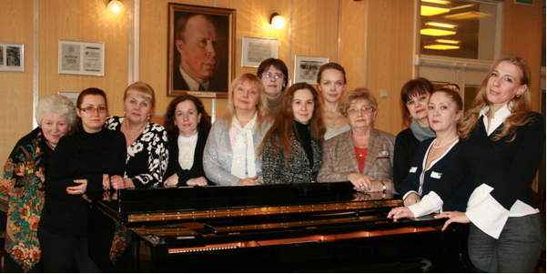

Школа СОШ №50
г. Мирный Мирнинская городская детская музыкальная школа
Школа СОШ №50
г. Мирный Мирнинская городская детская музыкальная школа

История концертмейстерского отдела с первого дня своего существования неразрывно связана с историей школы.
За это время много прекрасных музыкантов работали здесь, формируя ее индивидуальный стиль: высокий профессионализм и ответственность, требовательность и чуткость по отношению к растущим личностям. Это прекрасные музыканты: К. Трушкина, Э. Гиндина, И. Ананов, А. Рыбчевская и многие другие.
Работая рука об руку с педагогами, концертмейстеры выводят своих маленьких солистов на все доступные площадки, начиная с детских садов и общеобразовательных школ до лучших концертных залов столицы: Большого и Малого залов Мирнинской консерватории, Концертного зала, Мирнинского Дома музыки, и тд. Это лишь неполный перечень концертных площадок, в которых с неизменным успехом выступают ведущие концертмейстеры школы – А. Богданова, Е. Неволина, Е. Ушакова, Н. Белькова. Их концертная деятельность давно вышла за пределы Мирного: выступления в Алма-Ате, Орле, Туле, Калининграде, Липецке, Вологде, Санкт-Петербурге, а также за рубежом – в Италии, Англии, Болгарии, Литве.
На протяжении почти 23 лет концертмейстерским отделом руководит Елена Анатольевна Неволина.
Мастерство лучших работников отдела отмечены дипломами, грамотами и благодарностями Департамента культуры города Мирного, Городского методкабинета, Союза композиторов. Шнитке, Фондов Владимира Спивакова и «Новые имена».
- Богданова Анна Алексеевна
- Дмитриева Елизавета Владимировна
- Мещеринова Анастасия Сергеевна
- Мурашкин Артем Игоревич
- Неволина Елена Анатольевна
- Новикова Елена Викторовна
- Осипенко Александр Иванович
- Стародубровский Алексей Валерьевич
- Филипенкова Екатерина Васильевна
| История школы |
| Школьный музей |
| Творческие коллективы |
| Фотогалерея |
| Библиотека |
| Филармонические сезоны |
| Независимая оценка |